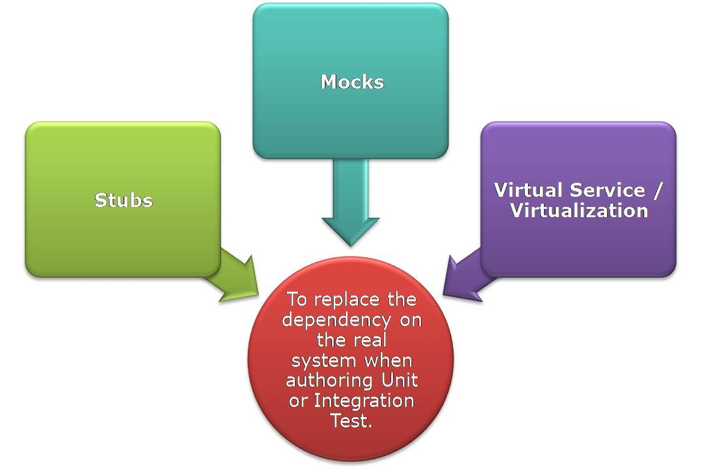

Stubs, Mocks, Virtualization – What’s in a name!
Tests are specifications detailing about how to test, what to test, how much to test, how frequently to test. You derive them from Acceptance Criteria (AC).
To achieve good quality code and test coverage, we opt for TDD- Test Driven Development. You write a test for AC, then you write the code to pass that test then you write another test and repeat till the AC conditions are fulfilled!
We usually tend to verify-
- That the business logic is in place
- The flow sequence in which the methods should be called to fulfill that AC / Feature.
- How many times the method should be called and in what sequence.
- That the external service / Database returns a specific value when the call is made.
We achieve this with the help of Unit & Integration Tests.
Unit tests are the tests that run only in memory, runs fast, is repeatable, does not touch any external resources.
If the test touches the database, file system or other systems, then it is not a unit test anymore- it is now an Integration test. We use this approach to test our code and 3rd party code as well.
Even if your code under test is dependent on external service/API, you should be able to write your tests to exclude these dependencies and test the current method. It is more a matter of understanding what and how to do to reduce the dependencies so as to validate the code.
Multiple dependencies to commence testing or to verify the development code:
- Application/backend system used by multiple teams
- Unstable environment
- Test data not readily available for the Test team
- Difficult to verify the interactions between the systems
- Difficult to set up data in test env - E.g. Payment messages/ Fraud Detection
Solution: Build Test Doubles - stubs, mocks, virtualization (virtual service)

What is a Mock / Stub / Virtual Service: An Object mirroring the real object for test purposes.
Why: To replace the dependency on the real system when authoring Unit or Integration Tests.
They - Stubs, Mocks, Virtual service - don’t actually implement any business algorithms or interact with any external APIs.
When to Mock & When to Stub or Virtualise for that matter?
We tend to use these terms interchangeably and miss out on what they actually do! Each has its purpose depending upon the use. They solve different problems.
Mocks expect a method to be called and will raise an error if not. Whereas stubs allow an object to respond to a method with some value. Virtualise it if a wide team is dependent on the same service/resource.
Refer Martin Fowler’s article explaining the difference between mocks & stubs - Mocks Aren’t Stubs
Use -
Mocks - for unit tests.
Stubs - for Integration tests when you don’t really want to connect to external API / resource.
Virtualisation - if a wider team is dependent on the same external resource.
Mock object – is a test object inserted into the system that helps decide if the system interacted with some other object.
If you send something and assert against it and it’s not to the real system then it’s a mock object.
- Mock objects to check the interactions against calls/objects.
- At the code level - instantiated and used within the unit test
- To test the behaviour of code – or to check if the intended code was gone through
- Verifies the process / interactions - was the API called in the expected sequence, with the expected parameters? This is perhaps one of the major benefits.
- To verify if some service calls were made – which may not return the response (void methods)
- Stateful within the scope of creation and usage.
Stub – helps the test run.
- Simulated Testable version of a real system
- You define response for each type of request- always returns what you want
- Within the code
- Gives - Predefined state – returns a value that suits the test.
- Stateless
- Hard Coded response data
- Just to supply responses for a given request.
Difference :
-
Mocks are about the expectation for how a method is to be called, the flow to be followed, to check if the method was called or not or an unwanted method was called on the mock.
Stubs – just respond to a call with a pre-configured value. -
Stub represent external services, while mock is test facing.
-
Mocks decide pass or fail. Stub verifies the response was returned.
-
Stubs are written with a set response. They deal with if right input was passed and the response was received whereas Mocks verify whether the sequence of calls was invoked and with the predefined inputs.
E.g. If we have a 3rd party API -
Stub will substitute the part of an API and will respond with a predefined response.
Mock will make sure that API calls are made in sequence and no unwanted calls happen to another API.
Virtualization will run as an external service, and will substitute the complete 3rd party API to be shared across teams.
- The thing you assert on is a mock object and everything else that helps the test run is a stub.
- We verify stubs by checking state after an action & we tell mocks to verify the interaction.
- Mocks expect a method to be called and will raise an error if not. Whereas stubs allow an object to respond to a method with some value.
Scenario : To verify order is successfully placed on Amazon.
Steps - order is added to a cart if in stock, payment is done, order is placed successfully with unique order number generated and email for the placed order is sent to customer.
Tests : Verify order is added to cart if in stock or order quantity more than 0. (shopping cart quantity increased)
Verify payment is done. (transaction Id generated - third party service(API))
Verify that order is placed successfully and unique order number is generated (order id in response)
Verify email is sent to the customer (null response - third party service(API))
Verify that We invoke the API in the right sequence and with the right inputs(customer email & OrderId in case of email sent feature).
Verify that in case we happen to call some other unintended API or method, then we need to know of that mistaken call as well with the exception message.
We have test methods as orderaddedtocart() , paymentdone(), placeanOrder() & emailsent()
Mocks - verify orderaddedtocart() method is called followed by paymentdone() is called and the placeanOrder() and emailsent() are called in sequence by asserting on placeanOrder() to return success order message and a unique number.
Verify that emailsent() was called - We can’t really verify this but then the flow ensures that emailsent() was called.
Verify that methods were called with right number of parameters
Verify that methods return exception when incorrect parameters were passed( total no, data type, etc)
Stubs - to verify the success order message with OrderId when placeanorder() method is called.
To verify that transaction number was generated post payment. (Integration Test as it ends up calling 3rd party API for Payment(can be stubbed with transaction number as response) /Email(can’t be stubbed to have a specific response. Returns OK if the function has been called with the syntactically correct parameters))
If we want verify Email was sent to the customer on placing the order, we’d be testing the email server. Instead, we should test whether we use the email API correctly or not (via stubs), and have a separate validation to ensure that the email server can accept email requests and send to the customer.
Now, when you have to perform End to end tests, Smoke tests,- (e.g. order was placed for customer x with Quantity 5, OrderId was generated, but because Payment API failed (so no transaction returned)) - then verify the response time. To have automated tests in place before actual APIs are available, or when multiple teams has dependency on the same API /external resource, use virtualisation!
Virtualization -
- Virtual Service can be Deployed at a remote server to be accessible to wider teams.
- Can be shared widely with different teams to avoid similar kind of dependency across teams.
- Can simulate non-functional characteristics.
- Record the traffic and then manually modify the data.
- Avoid duplication of efforts for creating stubs for the same service across teams
- Use Service Virtualisation tools - Commercial (e.g. CA LISA) as well as Open Source (e.g. mountebank) are available.
- To simulate environments (or specific components) and make their behaviour available to the entire team
- To taste a cake – its flavor, texture, and all – before it has finished baking.
- For a more scalable approach.
- Virtual services are just test stubs that you can make yourself for system test, component test, integration test.
- For the Teams to achieve Continuous Integration between each other and to be able to use automation when real systems are unavailable for testing.
What to keep in mind when you virtualise :
Have a look at my Service Virtualization - When integration points are a dependency for development article.
- Virtualise all error codes - API specific, backend specific.
- Virtualise positive and negative responses of API
- Check for all enum values
- Optionality of fields and segments
- Number of segment occurrences
- Specific field formats
- Data types
- Length
- Response Time
- Load
- All possible combinations of URL & Query parameters
- All possible combinations of segments in payload
- Business logic for if else conditions within API (fields, segments)
Happy speedy development with stubs, mocks and virtualisation folks :)